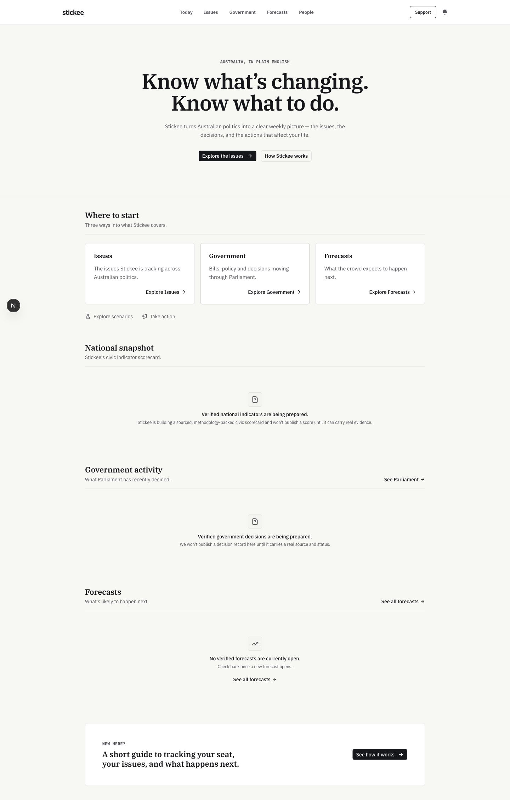
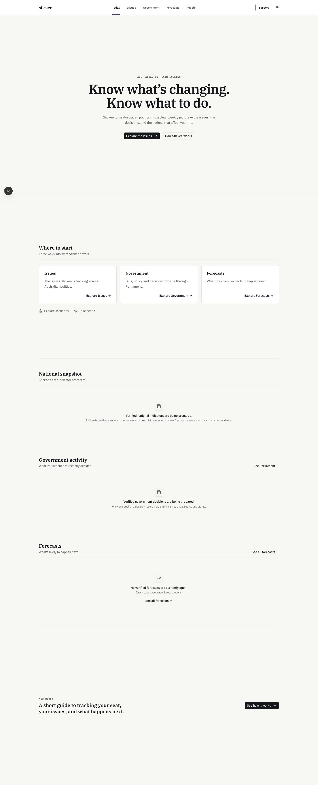
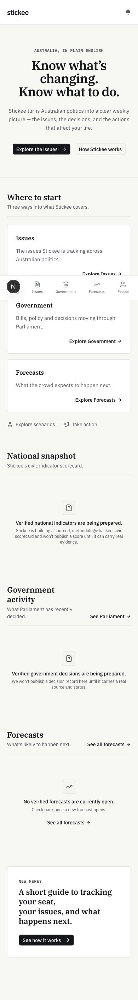
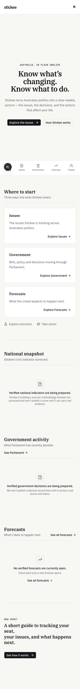

Stickee homepage
Existing and proposed layouts, captured at identical viewport sizes. Content and destinations are unchanged. The proposed hero fills the viewport below navigation; introductory sections gain space, while civic information retains natural height.
Open proposed homepage · Open original homepage
Desktop · 1440 × 900
Existing
Proposed
Mobile · 390 × 844
Existing
Proposed
Local preview: Supabase disabled; existing honest empty states shown. Browser prompts dismissed for consistent comparison. The floating N is the Next.js development indicator, not production UI.